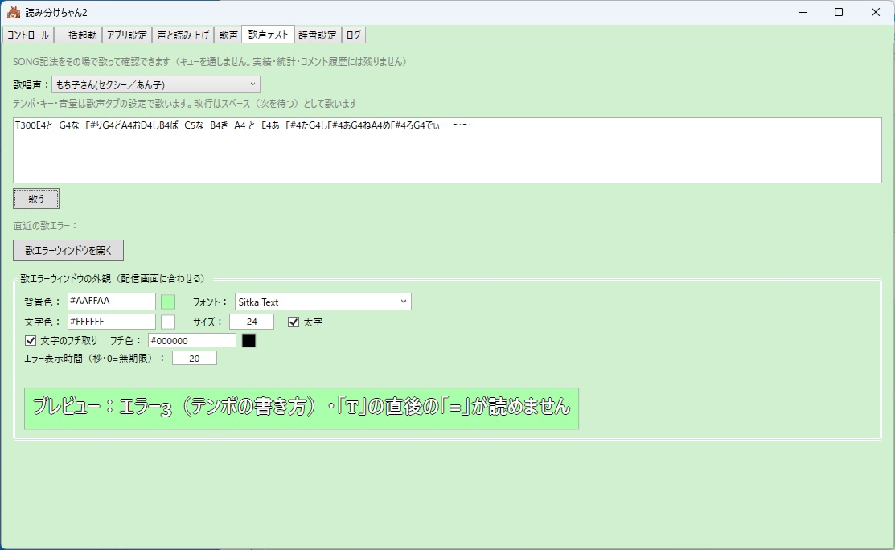

先行テスター版・お歌機能
読み分けちゃんに歌ってもらう
コメントに音符を書くと、そのとおりに歌います。
このガイドは 2 部構成です。
- 前半：セットアップ — 本体を手元の PC で動かして、 好きなだけ歌わせて遊べるようにするまで
- 後半：SONG 記法 — 音符の書き方（実際の配信でコメントで 歌わせるときも、記法は同じです）
セットアップ：手元で歌わせるまで
🎤 お歌には VOICEVOX が必要です
歌声には、無料の音声合成ソフト VOICEVOX の歌唱機能を使います。
読み分けちゃん2 本体だけでは歌えないので、先に
https://voicevox.hiroshiba.jp/
からインストールしてください（無料です）。
- VOICEVOX をインストールする
公式サイトからダウンロードして、 画面の案内どおりにインストールします。 - 読み分けちゃん2 をインストールする
最新版のインストーラを ダウンロードして実行します。
※ 途中で「Windows によって PC が保護されました」という青い画面が出たら、 「詳細情報」→「実行」で進めてください（この警告について）。 - VOICEVOX を起動しておく
ふだんどおり VOICEVOX を起動して、そのまま置いておきます。 - 読み分けちゃん2 を起動して「スキャンして受信開始」
デスクトップの「読み分けちゃん2」アイコンから起動し、 「タイムライン」タブの「スキャンして受信開始」ボタンを押します。
※ 初回起動時は先に初期設定ウィザードが開きます。歌わせて遊ぶだけの場合は、 用途をたずねる画面で「歌を試したいだけ」を選べば、配信まわりの設定は飛ばせます （あとから設定タブでいつでも設定できます）。 - スキャン結果を確認
「ステータス」タブのエンジンスキャン結果に VOICEVOX が「使用可能」と 表示されたら準備完了です。 - 「歌声テスト」タブで歌わせてみる
歌唱声を選んで、入力欄に記法を書いて「歌う」。ここは練習場なので、 何度でも自由に試せます（コメント履歴や統計には残りません）。
歌声テストタブ。書き間違いがあると、どこでつまずいたかをその場で教えてくれる [歌]は不要で、記法だけを書きます。[歌]が要るのは実際の配信のコメントのとき（後述）。
SONG 記法：基本
コメントで [歌] のあとに音符を並べると、そのとおりに歌います
（歌声テストタブでは [歌] なしで記法だけ）。
[歌]T180 Cかー Dえー Eるー- 音の高さはアルファベットで書く：C＝ド・D＝レ・E＝ミ・F＝ファ・G＝ソ・A＝ラ・B＝シ。
- 高さのあとにひらがなを書くと、そのことばで歌う：
Cか Dえ Eる - 高さだけ書いてことばを省くと、ドレミの名前で歌う：
C D E＝「ドレミ」 ー＝のばす（1 文字ぶん長く）・〜＝のばしてビブラート・、＝休み#＝半音上げ・b＝半音下げ（高さの文字の直後に書く：F#そ）T＋数字＝テンポ（30〜300・ふつうは 180）。曲の途中で変えてもいい。- 高さの文字のあとに数字を書くとオクターブの直指定（
C4など。書かなければ声に合った高さで歌う）
音符の長さを変える（Q）
Q＋数字＝音符の長さ。Q4＝ふつう（四分音符）・Q8＝半分・Q16＝そのまた半分。
一度書くと、次に変えるまでずっと効きます。
[歌]Q8そらそら Q4みーどー使える数字：1・2・3・4・6・8・12・16・24・32・48・64・96
三連符
Q12 で三連符（Q4 を 3 つに割った長さ）になります。
[歌]Q12どれみ Q4ふぁーースタッカート（音をはねさせる）
Q16 にして「音 3 つぶん＋休み 1 つぶん」の形にすると、はねた感じで歌います。
[歌]Q16たーー、たーー、たーー、音をまとめて上げ下げ（^ と _）
^＝1 オクターブ上へ・_＝1 オクターブ下へ（↑ ↓ でも OK）。
そこから先の音がまとめて動きます。
オクターブの数字を書かずに ^ と _ だけで書いておくと、声を替えても歌える譜面が書けます。
[歌]そーらー ^そーらー _そーらー（まんなかの高さ → 1 オクターブ上 → 元の高さ、の順で歌います）
声の強さ（V）
V＋数字＝声の強さ 0〜10。ふつうは 5。V0 は音の無い間（長さはそのままで声だけ消える）。
一度書くと、次に変えるまでずっと効きます。
[歌]V3そーそー V8らーーー V5みー実際の配信で歌わせるとき
⚠ 配信のコメントでは、必ず先頭に
[歌] を付けてください
[歌] が付いていないと、譜面はただのコメントとして
そのまま読み上げられてしまいます（「てぃーひゃくはちじゅう しー…」のように）。
○ [歌]T180 Cかー Dえー Eるー
× T180 Cかー Dえー Eるー ← 歌になりません歌声テストタブ（手元での練習）では [歌] なし・配信のコメントでは
[歌] あり——ここだけ違うので、配信で使う前に思い出してください。
手元の歌声テストで作った譜面は、先頭に [歌] を付ければ
そのまま配信のコメントで使えます。
テスターの皆さんへ
- 長い譜面はコメントの文字数上限で途切れます。配信では譜面を分けて送ってください （複数コメントをつなげて歌う仕組みは設計中です）。歌声テストタブには上限の心配はありません。
- 音符の書き間違いがあると、どこでつまずいたかをその場でお知らせします。 直して送り直してみてください。
- 「こう書けたら嬉しい」という記法の提案も大歓迎です。この記法自体、 テスト配信でのリスナーさんの発明を取り込みながら育ってきました。
上級者向け：Q は音価の分母（全音符基準）＝ MML の L と同流儀。